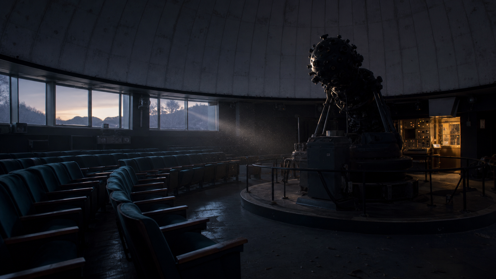

薄明の星図
春から初夏の星座を、解説員のライブナレーションでたどる定番プログラム。
- 上映時間
- 約38分
- 対象
- 小学生以上

6月18日 20:40の「星図航路」は機材点検のため一部演出を変更して上映します。座席表PDFは最新版をご確認ください。
PROGRAMS
春から初夏の星座を、解説員のライブナレーションでたどる定番プログラム。
環境音楽と星雲映像で構成する夜間限定ヒーリング作品。
月の満ち欠けを親子で学べる昼間のキッズプログラム。
TODAY'S SCHEDULE
オンライン購入は上映開始15分前まで。20:40回のみ座席表PDFの更新時刻が窓口掲示と異なる場合があります。
| 一般シート | 大人 1,600円 / こども 900円 |
|---|---|
| ペアシート | 3,800円から |
| 夜間特別投影 | 一律 2,000円 |
平日 10:00-21:10 / 土日祝 9:30-21:40
チケット窓口は最終上映開始時刻まで営業します。
暁中央駅 東口から徒歩4分。地下連絡通路 A3出口直結。
駐車場はありません。公共交通機関をご利用ください。
ARCHIVE NOTE
過去の上映表、座席表PDF、投影ログの一部は資料整理のため順次差し替えています。古い検索結果を参照する場合は、日付と時刻を必ず確認してください。